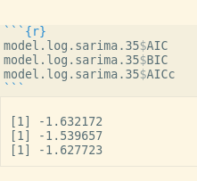

A SARIMA Approach to a COVID-19 Dataset
for the final project of statistics 135 spring 2020
A time series model is a family of statistical model that aims to model data that progresses with time. The goal of time series model is to model any possible relationship between data points so the what is left is just random noises or random small fluctations. In this blog, I will talk about my approaches to use a time series model to model a dataset of number of cases of COVID-19 in a place called Timseria(fake place but real data) in a duration of 66 days. We will start by exploreing the dataset by plotting it out! From the plot, we can see that the number of cases starts to skyrocked around day 50. However, since the difference our sample is huge, it's hard to observe what's the relationship between early data pointsd and later datapoints. As such, we can take the log of the daily counts of the identified cases to reduce the variance or bring the data on two extremes closer so we can what is happening in the middle. And of course, we see a clearn cutoff at around day 35. Emm it's not 50? That's where it is helpful to pay more attention to what is happening in the middle. Now that we have a good idea about what the general shape is like, let's dig into the dataset and start our analysis. First thing we might want to do is to take the difference between data points. Essentially you substract each points by the data points before it. So n becomes n - (n-1) etc. You might ask what happends to one? Well no pain no gains. But I promise you it will pay off later. The effect of taking difference is that it elimainate any linear trend. It is effectively equvalient to fitting a regression line to the data and getting the residuals. Why you may ask? Well think about this way, a linear trend essentially means that your data increases/decreases by a constant amount at each time step. If you take the difference between the data points, starting at the second data point, for point n, you take out (n-1) times the constant because the previous datapoint is obtained by first data times plus the constant (n-1) times in a perfect linear data set. In the same way, take the difference twice, or take the second order diffference, will elimainate any quadratic trend with a power 2. You might wonder "why we are doing this?" Well let't backtract a bit and think about what is the goal of time series model. The goal to model all relationship between points such that only noises or random fluctations are left. By taking the differencing, we are trying to get what is called weak stationarity, which basically means that the mean (average) of the data is approximately 0 and there is not trend or seaonality left in data. Wait, what on earth is seasonality? Well think about a data set of turkey sales in U.S., when would you expect most of the sales? Probably Novebemer right? Therefore, imagine if you plot out the monthly sales of turkey across many years, you can expect to see a big spike at every Novebermber. That is what we will call seasonabilty. Seasonabilty can taken out by doing what we can seasonal diffferecning. Totally didn't expect the way to take out seasonality would be seasonal differencing, aren't you? :) Since the seaonality doesn't seem to bump up any well in this dataset, we ill skip this part for now.
Plot of the sample
Plot of the log counts

Plot after the first differencing
Plot after the second order differencing

So if you take a look at the plot after second differecing, it looks pretty random right? But is it? Among the many noises you observe in your life, some noises are actually a combination of different noises. Think about two famous singers, one singing rock and another one singing classical. If they sing at the same time, it would sound like they are just making noises, but they are actually not! (Well, unless you hate rock or classsical music) The same thing might be happening here as well. Hence, we will need grab some more tools from our tool box. Namely, the acf plot and pacf plot. There can be a lot math that go behind them, but acf and pacf help you to figure out if there's any subtle relations in the seemingly random data. If the acf and pacf plot of the data after the differecing, we observe two big spikes in the acf plot that bypass the blue boudary that we draw up for them. Flashback to when you are kid and when your parents ask you to stay in where you are. What happens if you decide to stand up and go out, then you are "bad bad baby". Here is the same way: if we observe any spikes other the first one that bypasses the blue boundary, we know something fishy is going on. Then same things happens to pacf plot, except this rule even applies to the first spike. Guess pacf is worse kid there. (just kidding) If there's any trespasses, we will suspect there is something called ARMA process going on underneath the data. An ARMA model captures the subtle correlations between data points. How does it do takes some math to expalin, but it is definitely Greek for you if you have training in probability. Different acf and pacf plots can give us on what kind of parameter that an ARMA process has. In this case, for both acf and pacf, most of the bars are staying nice in line except the first one or two. In this case, we can actually resonably assume that it might be an ARMA(1, 1) process. It is usually more complicated than that though and it's not a definite proof. The only way to confirm is to actually model it and see how well it fits. That's what we are going to do now actually. And actually, we can combine ARMA and differecing into a process of ARIMA process. Why not AR-D-MA OR D-ARMA? Well life is harsh, not evveryone can use their initials as their school or google email. In this way, our model become an ARIMA(1, 2, 1) process where 2 stands for second order differecing.
ACF after second differecing
PACF after second differecing
After we do that conveniently using the built in SARIMA funtion in R, we obtain an acf plot of the residuals and a bunch of other plots. We will come back to what SARIMA statnds for, for now, just think about it as a magic function that can model any ARIMA prcoess! (Which it is actually) Now all the acf values are stand in line like good boy but what are all these other plots? Well, the one on the top is just a plot of residuals for a sanity check to make sure nothing crazy is going on (the process must look stationary-ish ) The one next to acf is the normal QQ plot, which essentially checks if the residuals seem to follow a normal distribution by seeeing if the points follow a straight line. The bottom one is called Ljung-box statistics. This essentially checks if our model if good fit for the sample points. A good fit is above 0.5. And we see residual plot doens't show anything crazy and the QQ plot is kinda a straight line. However, many points are not statistically signicantly (means they fail the test nooo!) according to Ljung-box statistical test. Then we manually plot the pacf and it looks reasonable. Next, we will look at three "IC"s: AIC, BIC, and AICc. The three "IC"s tell us how probable it is to obtain our sample given model is true. The differences bewteen them is that BIC and AICc penalize, or dislike, complex models. AIC is most lenient on complex models and BIC is the harshest. For all three "IC"s, the smaller, the better because we put a negative sign in the front when calculating the probability.
Model summary ARIMA(1, 2, 1)

pacf ARIMA(1, 2, 1)

Three "IC"s ARIMA(1, 2, 1)
Now, we want to try to improve our model. There are many things we can do. We can probably try to model to percent of increase instead of the daily counts instead taking the log of the data. Here, I propose that we can try to select more relevant data. As mentionaed above, there seems to be a cutoff at 35, which probably means that the situation deteriorates significantly on that day. Therefore, it is possbile that the data before that day is not representative of the actual situation. However, it's actually pretty tricky to say if certain data are relevant or not, but I will try it any way. And if we only plot the data from day 35 and onward, we actually see a almost straight line! Using what I explained above, you know we can take the linear trend by taking the first order difference. As a matter of fact,since the line looks so perfect, I will first model it on ARIMA(0, 1, 0), which essentially means I assume that there is no ARMA process. And after we use the magical SARIMA function, surely everything looks very resonable and we now have even more points are statistically significant! The "IC"s all decreases as well. So maybe this is indeed a better model.
After day 35

Model summary ARIMA(2, 1, 0)
pacf ARIMA(2, 1, 0)

Three "IC"s ARIMA(2, 1, 0)
However, so far, all the metrics we have seen only shows how well the model fit the sample. But how can we know if a model is good at makeing future preidcations? After, that's what we really care about! It is the same way if I want to make a practice final myself, what I really care is how well it matches the actual final in a week and not last year's final. To do this, we use some called cross validation. Cross validation can mean different things for other models, but in time series, it looks like this. I start with only half of my dataset, which we can train set, and fit an ARIMA models with the parameters that I think is good, and pretend that I don't know anything about the second half. Then I use the the model to predict the second half of the data set, which we call validation set, and calculate the average of differences between my prediction squared, which we call MSE. Then I add one more time point to my train set and take one aways from my test set. Then I fit and model with train and use the model to predict the test set, and then calculate the MSE again. We repeat the process until the test set runs out or the train set is the entire data set. Then we take the average MSE we get. In this way, we can a sense of how well our model will perform in the actual prediction. And after calculating MSE, the second model gives a better cross validation error (not shown in the plots). Now time to make actual predictions and all the predications for next ten days are shown in a plot along with the original data. One big warning sigh is the cross validation error for both model all look pretty large. This may mean that we need a even better model. However, we will end here today. I will update you guys if anythign else comes up. Thanks for reading! :) PS: The SARIMA is a even more comprehensive model than ARIMA. It can even model seasonalities in the data set but it also have 6 paremeters! So in the same way ARIMA can model ARMA, SARIMA can model ARIMA and ARMA.
Predictions